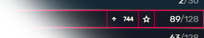

<div class="loaders" [class.hidden]="serversLoaded && sortingComplete">
	<div style="animation-delay: 0s"></div>
	<div style="animation-delay: .5s"></div>
	<div style="animation-delay: 1s"></div>
	<div style="animation-delay: 1.5s"></div>
	<div style="animation-delay: 2s"></div>
</div>

<div class="hint" *ngIf="shouldShowHint">
	<h3 l10nTranslate>
		{{hintText}}
	</h3>

	<div class="favhint">
		<div class="lol">
			not this one!
		</div>
		
	</div>

	<a
		[routerLink]="['/servers']"
		class="cfx-button primary"
	>
		<span class="material-icons-outlined">reorder</span>
		<span class="label" l10nTranslate>
			#BottomNav_Servers
		</span>
	</a>
</div>

<div class="list" *ngIf="isBrowser()" #list [class.hidden]="!serversLoaded || !sortingComplete">
	<virtual-scroller
		*ngIf="type !== 'history'"
		#scroll
		[items]="sortedServers"
		[bufferAmount]="25"
		[executeRefreshOutsideAngularZone]="true"
		[scrollThrottlingTime]="100"
		(vsUpdate)="changeDetectorRef.detectChanges()"
	>
		<servers-list-item
			[server]="server"
			[pinned]="isPinned(server)"
			*ngFor="let server of scroll.viewPortItems; trackBy: svTrack"
		></servers-list-item>
	</virtual-scroller>

	<div class="history-list" *ngIf="type === 'history'">
		<div class="server" *ngFor="let server of historyServers" (click)="attemptConnectTo(server)">
			<div class="content">
				<figure class="icon">
					
				</figure>
				<div class="title" [innerHTML]="(server && server.historyEntry.hostname)||'test' | escape | colorize"></div>
				<div class="actions" *ngIf="server.server">
					<button
						(click)="toggleFavorite($event, server.server)"
						[class.active]="isFavorite(server.server)"
						class="fav"
					>
						<span *ngIf="!isFavorite(server.server)" class="material-icons-outlined">star_bordered</span>
						<span *ngIf="isFavorite(server.server)" class="material-icons-outlined">star</span>
					</button>
				</div>
				<span class="players" *ngIf="server.server">
					{{server.server.currentPlayers}}<span class="max">/{{server.server.maxPlayers}}</span>
				</span>
			</div>
			<div class="info">
				<span
					class="status"
					[class.loading]="server.status === HistoryServerStatus.Loading"
					[class.online]="server.status === HistoryServerStatus.Online"
					[class.offline]="server.status === HistoryServerStatus.Offline"
				>
					{{HistoryServerStatus[server.status]}}
				</span>

				<span class="time">{{ '#DirectConnect_LastPlayed' | translate:locale.language }}: {{ server.historyEntry.time | amTimeAgo }}</span>
			</div>
		</div>
	</div>
</div>
